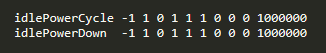

Overview of 68xx Low Power Demo
===========
This lab showcases different strategies for power optimization using the xWR6843 and xWR6443 devices. The included project is the [68xx Out-of-Box Demo](../../../Out_Of_Box_Demo/docs/Out_Of_Box_Demo_User_Guide.html) but provides a software-based sequence for putting the device into a low power state. The purpose of this lab is meant to be a demonstration of low-power capability solely using software techniques. These techniques can be easily transferred to existing projects to enable low power using the xWR6843 and xWR6443 devices.
*Note: This lab requires some familiarity with TI mmWave Sensors with regard to both software usage and device architecture.*
<img src="images/iwr6843isk.jpg" width="300" class="img-responsive"/>
<a name="quickstart"></a>
Hardware and Software Requirements
-----------
[[y! IWR6843 ISK Clarification
This lab makes use of the IWR6843ISK EVM but the example low power functions can be used with any of the following devices:
* IWR6843
* IWR6843AoP
* IWR6443
* AWR6843
* AWR6843AoP
* AWR6443
]]
### Hardware
Item | Details
--------------------------|-----------------
xWR6843ISK Antenna Module Board (Or xWR6843AOP/xWR6843ODS EVMs) | [xWR6843ISK ES2.0 Antenna Module](http://www.ti.com/tool/IWR6843ISK)
MMWAVEICBOOST Carrier Board | OPTIONAL: [MMWAVEICBOOST Carrier Board](http://www.ti.com/tool/MMWAVEICBOOST) for CCS based development and debugging
| Note: The rest of this document will refer to the above board combination as <b>EVM</b> .
Computer | Windows 7 or 10 PC with Google Chrome Browser and TI Cloud Agent Extension installed.
Micro USB Cable | Provided with the [Industrial Radar Carrier Board](http://www.ti.com/tool/MMWAVEICBOOST)
Power Supply | 5V, 3A with 2.1-mm barrel jack (center positive). The power supply can be wall adapter style or a battery pack with a USB to barrel jack cable.
** Note: Appropriate laboratory equipment is required for power measurement **
### Software
Tool | Version | Download Link
----------------------------|---------------------------|--------
TI mmWave SDK | 3.5.x.x | [Link to Latest mmWave SDK](http://software-dl.ti.com/ra-processors/esd/MMWAVE-SDK/latest/index_FDS.html) To access a previous version of the mmWave SDK scroll to the bottom of the table and click the link under "MMWAVE-SDK previous release". Repeat to continue stepping back to previous versions.
mmWave Demo Visualizer | 3.5.0+ | Available online at https://dev.ti.com/gallery/view/mmwave/mmWave_Demo_Visualizer/
OR | |
UART Terminal Emulator | Any |
mmWave Industrial Toolbox | Latest | Download and install the toolbox. Go to [Using TI Resource Explorer & the mmWave Industrial Toolbox](../../../../docs/readme.html) for instructions.
Uniflash | Latest | Uniflash tool is used for flashing TI mmWave Radar devices. [Download offline tool](http://www.ti.com/tool/UNIFLASH) or use the [Cloud version](https://dev.ti.com/uniflash/#!/)
Low Power Software Techniques
===========
The included example project demonstrates low power capability by powering down various peripherals which leaves the device in a state resembling **Idle Mode**. While in these states various levels of functionality remain which is discussed below.
All of these techniques are performed via software by the device R4F core. The corresponding function calls are included with libraries for:
* **mmWave-SDK 3.5**
* **mmWave-DFP 6.3**
* Version 6.3 is not yet provided on ti.com and the library is included with this project
* **LibSleep for 68xx/64xx devices**
* This library is custom and is included with this project
[[b! For custom projects
These libraries must be added in order to custom projects in order to leverage these power reduction techniques. These libraries are included in the project **lib** folder.
]]
## Power Domain Techniques
The xWR6843 features a separate **DSP Power Domain** from the **Always-On Power Domain** as shown in the diagram below. It is not possible to directly manipulate the **Always-On Power Domain** for power consumption savings. Please see the [Technical Reference Manual](https://www.ti.com/lit/ug/swru522e/swru522e.pdf#page=297) for more information on the device power domain.
### Shut Down the DSP Power Domain
The integrated DSP utlizes a separate power domain from the rest of the xWR6843 device. As such it is possible to power down and clock gate the DSP power domain. This technique is highly preferred in applications where the DSP is not used. **Note: It is not possible to fully power the DSP back on without performing a hard reset to the device. This is also the only listed low-power component that cannot be powered back on at runtime.**
This is achieved by calling the **xWR6843_dss_power_down()** function in the custom **libsleep_xwr68xx.aer4f** library and cannot be reversed without issuing a hard reset to the device.
## Digital Domain Techniques
Digital domain techniques revolve around clock gating each of the three device subsystems. Each of these clock gating components take about 10 microseconds to toggle making them the most versatile power saving techniques. Moreover any or all of the clock gates can be utilized depending on peripherals in use. There are varying levels of device functionality when clock gating, please see the device clock domain in the [Technical Reference Manual](https://www.ti.com/lit/ug/swru522e/swru522e.pdf#page=291) for further details.
### Clock Gate the DSP Sub-System (DSS)
For applications where the DSP might be needed sometimes, DSS clockgating represents a graceful alternative. While in this state the DSP is not active, it is possible to ungate the DSS clock and resume operation very quickly. This component allows L1 memory to be retained while still saving significant consumption off the DSP power domain.
This is achieved by calling the **xWR6843_dss_clock_gate()** function in the custom **libsleep_xwr68xx.aer4f** library and can be reversed by calling **xWR6843_dss_clock_ungate()**.
### Clock Gate the Master Sub-System (MSS)
This component slows MSS_VCLK by sourcing from the 40 MHz external crystal instead of the 200 MHz APLL. While saving significant power, this renders a majority of device peripherals non-operable. (Notable exceptions to this are the **CAN_FD** and **QSPI** peripherals which run on slower clock speeds.) One must also ungate the MSS_VCLK in order to resume normal device operation. While in this mode running timers and sequences will be slowed by a factor of 5.
This is achieved by calling the **xWR6843_mss_vclk_40M()** function in the custom **libsleep_xwr68xx.aer4f** library and can be reversed by calling **xWR6843_mss_vclk_200M()**.
### Clock Gate the Radar Sub-System (BSS)
When analog peripherals are not needed the BSS can be clock gated and it is can be ungated very quickly. In this state not only the radar front-end, but also the other peripherals in the BSS block will be non-operable. ** This includes both of the Analog Domain Techinques listed below,** thus BSS clock-gating function must be called **after** both of the Analog Domain functions.
This is achieved by calling the **SOC_haltBSS()** function in the mmWave-SDK **libsoc_xwr68xx.aer4f** library and can be reversed by calling **SOC_unhaltBSS()**.
## Analog Domain Techniques
Analog domain techniques involve powering down two key analog peripherals, the Analog Front-End and the APLL. These are both invoked through the **mmWaveLink** call **rlSetPowerSaveModeConfig()** and are included in this example project. Each of these components take about 15 milliseconds to invoke and must be powered off/on in the order shown in the the diagram below.
### Power Down the RF Analog Front-End (AFE)
This component gracefully powers down the Analog Front End resulting in significant power savings when the device is not needed for active chirping. The RF Power Down function sets the device into a similar state prior to where both **RF Init** and **RF Power-up** have been performed as in [mmWave Studio](https://www.ti.com/tool/MMWAVE-STUDIO). Meanwhile performing AFE Power Up sets the device into a similar state where both RF steps have been performed.
This is achieved by calling the **rlSetPowerSaveModeConfig()** function in the **libmmwavelink_xwr68xx.aer4f** library with the input parameter
* **lowPwrStateTransCmd** = 1
It can be reversed by calling the same **rlSetPowerSaveModeConfig()** function with the input parameter
* **lowPwrStateTransCmd** = 2
### Power Down the APLL & GPADC
This component gracefully powers down the APLL resulting in significant power savings, though rendering nearly all of the device peripherals non-operable. Since all the other Sub-Systems utilize the APLL for clocking (e.g. DSS, MSS, & BSS), this function must be called last in a low-power/idle-mode scheme.
#### Powering Down APLL Only
This is achieved by calling the **rlSetPowerSaveModeConfig()** function in the **libmmwavelink_xwr68xx.aer4f** library with the input parameter
* **lowPwrStateTransCmd** = 3
It can be reversed by calling the same **rlSetPowerSaveModeConfig()** function with the input parameter
* **lowPwrStateTransCmd** = 4
#### Powering Down APLL & GPADC
Additionally there is an option to cut power to the GPADC engine for additional savings and sub-sequently powered on again. Note: The GPADC option has been tested but not validated for a variety of analog use-cases.
This is achieved by calling the **rlSetPowerSaveModeConfig()** function in the **libmmwavelink_xwr68xx.aer4f** library with the input parameter
* **lowPwrStateTransCmd** = 5
It can be reversed by calling the same **rlSetPowerSaveModeConfig()** function with the input parameter
* **lowPwrStateTransCmd** = 6
## Summary
There are varying levels of device functionality depending on the state
Function | Domain Type | Software Library | Functionality Limits
----------------------------|---------------------------|-------- |
DSP Power Domain Off |Power | libsleep_xwr68xx | No DSP functionality due to shutdown of DSP Specific Power Domain. Full device reset is required for to enable DSP power domain.
DSS Clock Gating |Digital | libsleep_xwr68xx | No DSP functionality for duration of clock gating. Functionality can be resumed by ungating DSP_CLK to 600 MHz.
MSS Clock Gating |Digital | libsleep_xwr68xx | No Cortex CR4F functionality. Functionality can be resumed by ungating MSS_VCLK to 200 MHz. **Exception is for CAN_FD and QSPI peripherals which run on lower clock frequency.**
BSS Clock Gating |Digital | mmWave-SDK (libsoc_xwr68xx.aer4f) | No active chirping functionality of any kind. Functionality can be resumed by ungating BSS_CLK to 200 MHz.
RF Power Down |Analog | mmWave-DFP (libmmwavelink_xwr68xx.aer4f) | No active chirping functionality of any kind. Functionality can be restored with DFP API.
APLL Power Down |Analog | mmWave-DFP (libmmwavelink_xwr68xx.aer4f) | No active chirping functionality of any kind. Functionality can be restored with DFP API.
APLL/GPADC Power Down |Analog | mmWave-DFP (libmmwavelink_xwr68xx.aer4f) | No active chirping functionality of any kind. Functionality can be restored with DFP API.
Idle Mode
===========
## What is Idle Mode?
This term refers to the sequence of low power functions used to set the device into an idle state. As few or as many of the functions can be used to make the idle mode scheme **but each must be invoked in appropriate order to ensure the device returns to an functional powered-on state.**
### Required function order for setting device into Idle Mode
The functions must be invoked in the following order to minimize the risk of running into modes.
* DSP Power Domain Off **OR** DSS Clock Gating
* MSS Clock Gating
* RF Power Down
* APLL Power Down **OR** APLL & GPADC Power Down
* BSS Clock Gating
### Required function order for bringing device out of Idle Mode
Subsequently the same peripherals must be powered on in reverse order to bring the device out of Idle Mode and into an appropriate functional state.
* BSS Clock Ungating
* APLL Power Up **OR** APLL & GPADC Power Up
* RF Power Up
* MSS Clock Ungating
* DSS Clock Ungating (Note: It is currently not possible to power on the DSP Power Domain without providing a full reset to the device)
## Invoking Idle Mode in the 68xx Low Power Demo
Just as most of the mmWave Labs use CLI commands to run the sensor, Idle Mode is invoked in similar fashion with either of the commands **idlePowerCycle** or **idlePowerDown**.

### Idle Mode Commands
* **idlePowerCycle** runs each of the low power functions to power the device down into Idle Mode then, after a user-specified delay, powers the device back up into functional mode and ready to accept CLI Commands.
* This command is useful when needing to confirm or determine device functionality.
* **idlePowerDown** runs each of the low power functions to power the device down into Idle Mode and leaves it there indefinitely. A hard reset to the device is required in order to provide power and resume functional mode.
* This command is useful when needing to confirm power figures.
### Idle Mode Parameters
Both of the commands **idlePowerDown** and **idlePowerCycle** use the following parameter structure `<subframeidx> <enDSPpowerdown> <enDSSclkgate> <enMSSvclkgate> <enBSSclkgate> <enRFpowerdown> <enAPLLpowerdown> <enAPLLGPADCpowerdown> <componentMicroDelay> <idleModeMicroDelay>`, where:
* `<subframeidx>`: always set to -1
* `<enDSPpowerdown>`: 1 enables **DSP Power Domain Off**, 0 disables
* `<enDSSclkgate>`: 1 enables **DSS Clock Gating**, 0 disables
* `<enMSSvclkgate>`: 1 enables **MSS Clock Gating**, 0 disables
* `<enBSSclkgate>`: 1 enables **BSS Clock Gating**, 0 disables (Note: Performed last at code level as discussed above)
* `<enRFpowerdown>`: 1 enables **RF Power Down**, 0 disables
* `<enAPLLpowerdown>`: 1 enables **APLL Power Down**, 0 disables
* `<enAPLLGPADCpowerdown>`: 1 enables **APLL/GPADC Power Down**, 0 disables
* `<componentMicroDelay>`: specifies a delay duration, in microseconds, between each successive power function
* `<idleModeMicroDelay>`: specifies a delay duration, in microseconds, after Idle Mode has been acheived but before device is powered up (if using **idlePowerCycle**)
### Invoking Idle Mode
In this demo Idle Mode **must** be invoked after the sensor has started chirping (i.e. The mmWave_Open() function has been called). It can be called in one of two ways,
* **UART Terminal**: By using a PC UART Terminal (e.g. PuTTY or Tera Term) and entering at CLI
* **[mmWave Demo Visualizer](https://dev.ti.com/gallery/view/mmwave/mmWave_Demo_Visualizer)**: By connecting to the demo visualizer and sending either **idlePowerCycle.cfg** or **idlePowerDown.cfg** config files to the device.
The **mmWave Demo Visualizer** method is discussed below.
Quickstart
===========
The quickstart guide covers setting up the EVM, flashing firmware, and putting the device into Idle Mode.
<a name="physical_setup"></a>
1. Setup the EVM for Flashing Mode
-----------
* For MMWAVEICBOOST + Antenna Module setup: Follow the instructions for [Hardware Setup for Flashing in MMWAVEICBOOST Mode](../../../../docs/hardware_guides/evm_setup_operational_modes.html)
* For xWR6843ISK in Standalone/Modular Mode: Follow the instructions for [Hardware Setup of xWR6843ISK/ODS for Flashing Mode](../../../../docs/hardware_guides/evm_setup_operational_modes.html)
* For xWR6843AoP follow the instructions to set the [on-board switches for Standalone Flashing Mode.](../../../../docs/hardware_guides/evm_setup_operational_modes.html)
<a name="flash_the_evm"></a>
2. Flash the EVM using Uniflash
-----------
Flash the binary listed below using UniFlash. Follow the instructions for [using UniFlash](../../../../docs/software_guides/using_uniflash_with_mmwave.html)
BIN Name | Location
-----------------------|------------
68xx_low_power_demo.bin | `<INDUSTRIAL_TOOLBOX_INSTALL_DIR>\mmwave_industrial_toolbox_<VER>\out_of_box_demo\`<br>`68xx_low_power_demo\prebuilt_binaries\68xx_low_power_demo.bin`
3. Setup the EVM for Functional Mode
-----------
* For MMWAVEICBOOST + Antenna Module setup: Follow the instructions for [Hardware Setup of MMWAVEICBOOST + Antenna Module for Functional Mode](../../../../docs/hardware_guides/evm_setup_operational_modes.html)
* For xWR6843ISK in Standalone/Modular Mode: Follow the instructions for [Hardware Setup of xWR6843ISK/ODS for Functional Mode](../../../../docs/hardware_guides/evm_setup_operational_modes.html)
* For xWR6843AoP follow the instructions to set the [on-board switches for Functional Mode.](../../../../docs/hardware_guides/evm_setup_operational_modes.html)
<a name="run_the_lab"></a>
4. Run the Lab
-----------
### 1. Start the Sensor
First, start sensor and begin object detection as discussed in the [68xx SDK Out-of-Box Demo User Guide.](../../../Out_Of_Box_Demo/docs/Out_Of_Box_Demo_User_Guide.html)
Note: Since this lab is HWA based, platform 64xx should be selected as below.
### 2. Invoke Idle Power via .cfg files
Next navigate to the **Plots** tab and click **LOAD CONFIG FROM PC AND SEND**. Then select the `idlePowerCycle.cfg` file.
The device should enter Idle Mode which is indicated by the on-board LED turning off for about 1 second. The device will then be powered up in reverse order and the LED will turn on which indicates the device is functional again and ready to accept CLI commands.
#### Example Sequence
The default command `idlePowerCycle -1 1 0 1 1 1 0 0 0 1000000` performs the following sequence
* DSP Power Domain Off
* MSS Clock Gating
* RF Power Down
* BSS Clock Gating
* Wait in Idle Mode for 1 second
* BSS Clock Ungating
* RF Power Up
* MSS Clock Ungating
Developer's Guide
===========
Build the Firmware from Source Code
-----------
<a name="software_requirements"></a>
### 1. Software Requirements
Tool | Version | Download Link
----------------------------|---------------------------|--------------
TI mmWave SDK | 3.5.x.x | [Link to Latest mmWave SDK](http://software-dl.ti.com/ra-processors/esd/MMWAVE-SDK/latest/index_FDS.html) To access a previous version of the mmWave SDK scroll to the bottom of the table and click the link under "MMWAVE-SDK previous release". Repeat to continue stepping back to previous versions.
Code Composer Studio | 8.3.1 or Later | [Code Composer Studio v8.3.1](http://processors.wiki.ti.com/index.php/Download_CCS) or Later
mmWave Industrial Toolbox | Latest | Download and install the toolbox. Go to [Using TI Resource Explorer & the mmWave Industrial Toolbox](../../../../docs/readme.html) for instructions.
### 2. Import Lab Project
The mmWave SDK Out-of-box demo Lab CCS Project is available under on TI Resource Explorer under mmWave Sensors → mmWave Industrial Toolbox. You can import the project in your CCS workspace using TI Resource Explorer in CCS or using a browser. Both methods of importing projects are defined in the Expand boxes below.
* Start CCS and setup workspace as desired.
* Import the project below to CCS using either TI Resource Explorer in CCS or CCS Import Projectspecs method:
* **68xx_low_power_demo**
[[+d Expand for details on importing via TI Resource Explorer in CCS
* In the top toolbar, navigate to **View → Resource Explorer**
* In the **Resource Explorer** side panel (not the main panel with "Welcome to.."), navigate to **Software → mmWave Sensors → Industrial Toolbox - <ver> → Labs → 68xx - Low Power Demo**
* Under the expanded **68xx - Low Power Demo** folder, there should be a CCS project named **68xx_low_power_demo**.
* Click on the project, which should open the project in the right main panel, and then click on the Import to IDE button <img src="images/common/import_ide_icon.png" width="40"/>.
+]]
[[+d Expand for details on importing via CCS Import Projectspecs
* In the top toolbar, navigate to **Project → Import CCS Projects...**
* With the **Select search-directory** option enabled, click **Browse...**, navigate to the **68xx_low_power_demo** folder at `C:\ti\<mmwave_industrial_toolbox_install_dir>\labs\out_of_box_demo\68xx_low_power_demo`, and then click **OK**.
* Under **Discovered projects**, select **68xx_low_power_demo** then click **Finish**.
+]]
[[g! Successful Import to IDE
After using either method, the 68xx_low_power_demo project should be visible in **CCS Project Explorer**
]]
[[b! Project Workspace
When importing projects to a workspace, a copy is created in the workspace. It is important to note that the copy in user's workspace is the one that gets built and all modifications will only be implemented for the workspace copy. The original project downloaded in mmWave Industrial Toolbox is not modified.
]]
### 3. Build the Lab
With the **68xx_low_power_demo** project selected in **Project Explorer**, right click on the project and select **Rebuild Project**.
{{y Selecting Rebuild instead of Build ensures that the project is always re-compiled. This is especially important in case the previous build failed with errors.}}
[[g! Successful Project Build
In the **Project Explorer** panel, navigate to and expand **68xx_low_power_demo → Debug** directory. On successful build, the following files should appear in the **Debug** folder:
* 68xx_low_power_demo.bin (this is the flashable binary used for deployment mode)
* 68xx_low_power_demo.xer4f (this is the Cortex R4F binary used for CCS debug mode)
]]
[[r! Build Fails with Errors
If the build fails with errors, please ensure that all the [prerequisites](#software_requirements) are installed as mentioned in the mmWave SDK release notes.
]]
[[b! Note
As mentioned in the [Quickstart](#quickstart) section, pre-built binary files, both .xer4f and .bin, are provided in the **prebuilt_binaries** folder.
]]
### 4. Execute the Lab
There are two ways to execute the compiled code on the EVM:
* **Deployment mode**: In this mode, the EVM boots autonomously from flash and starts running the bin image
* Using Uniflash, flash the **68xx_low_power_demo.bin** found at `<PROJECT_WORKSPACE_DIR>\68xx_low_power_demo\Debug\68xx_low_power_demo.bin`
* The procedure to flash the EVM is the same as detailed in the [Flash the EVM](#flash_the_evm) section.
* **Debug mode**: This mode is is used for downloading and running the executable (.xer4f) from CCS. This mode enables JTAG connection with CCS while lab is running; useful during development and debugging
[[+d Expand for help with Debug mode:
The CCS debug firmware (provided with the mmWave SDK) needs to be flashed once on the EVM.
* CCS Debug method is enabled by flashing the CCS Debug Firmware (provided with the mmWave SDK) using the methods covered in the Quickstart [Flash the Device](#1-flash-the-evm) section.
* Use the following image instead
Image | Location | Comment
----------------|--------------|------------------------
Meta Image 1 | `C:\ti\mmwave_sdk_<ver>\packages\ti\utils\ccsdebug\xwr68xx_ccsdebug.bin` | Provided with the mmWave SDK
After the CCS debug firmware has been flashed, connect the EVM to CCS
* Create a target configuration (skip to "Open the target..." if config already created previously in another lab for xwr68xx)
* Go to **File → New → New Target Configuration File**
* Specify an appropriate file name (ex: IWR68xx.ccxml) and check "**Use shared location**". Click **Finish**.
* In the configuration editor window:
* Select **Texas Instruments XDS110 USB Debug Probe** for Connection
* Select **IWR6843** in the **Board or Device** text box.
* Press the **Save** button to save the target configuration.
* [Optional]: Press the **Test Connection** button to check the connection with the board.
* Open the target configuration window by going to **View → Target Configurations**.
* Under **User Defined** configurations the target configuration previously created should appear.
* Right click on the target configuration and select **Launch Select Configuration**. The target configuration will launch in the **Debug Window**.
* Select the **Texas Instruments XDS110 USB Debug probe/Cortex_R4_0** and then right click and select **Connect Target**
* Load the binary
* With the **Cortex_R4_0** target connected, click on the **Cortex_R4_0** target and then click **Load** button in the toolbar. <img src="images/common/load_program_icon.png" width="40"/>
<img src="images/common/load_program.png" width="600"/>
* In the **Load Program** dialog, press the **Browse Project** button .
* Select **68xx_low_power_demo.xer4f** found at `<PROJECT_WORKSPACE_DIR>\68xx_low_power_demo\Debug\68xx_low_power_demo.xer4f` and press **Ok**.
* Press **Ok** again in the **Load Program** dialog.
* Run the binary
* Select **Texas Instruments XDS110 USB Debug probe/Cortex_R4_0**, press the **Run/Resume** button <img src="images/common/run_resume_icon.png" width="30"/>
* The program should start executing and generate console output as shown.
[[g! Successful Run Binary
If binary is running correctly, the Console will include the “CLI is operational” message which indicates that the program is ready and waiting for the sensor configuration.
]]
+]]
### 5. Stepping through the Idle Mode Functions
It may be useful to step through the Idle Mode functions using the debugger in order to observe the successive power reductions.
To do this navigate to **main.c** where the functions **idle_power_down()** and **idle_power_cycle()** are run when the CLI commands **idlePowerDown** and **idlePowerCycle** are executed. Set a breakpoint at the start of the sequence (**GPIO_write()**) or the step of your choosing. The below example shows a breakpoint called at the function corresponding to **MSS Clock Gating.**
One can then step through the rest of the sequence using the debugger **Step Over (F6)** function.
Need More Help?
===========
* Additional resources in the documentation of the mmWave SDK (note hyperlinks will only work if the mmWave SDK has been installed on PC):
* [mmWave SDK User's Guide located at `<mmwave_sdk_install_dir>/docs/mmwave_sdk_user_guide.pdf`](http://software-dl.ti.com/ra-processors/esd/MMWAVE-SDK/latest/exports/mmwave_sdk_user_guide.pdf)
* [mmWave SDK Release Notes located at `<mmwave_sdk_install_dir>/docs/mmwave_sdk_release_notes.pdf`](http://software-dl.ti.com/ra-processors/esd/MMWAVE-SDK/latest/exports/mmwave_sdk_release_notes.pdf)
* Search for your issue or post a new question on the [mmWave E2E forum](https://e2e.ti.com/support/sensor/mmwave_sensors/f/1023)